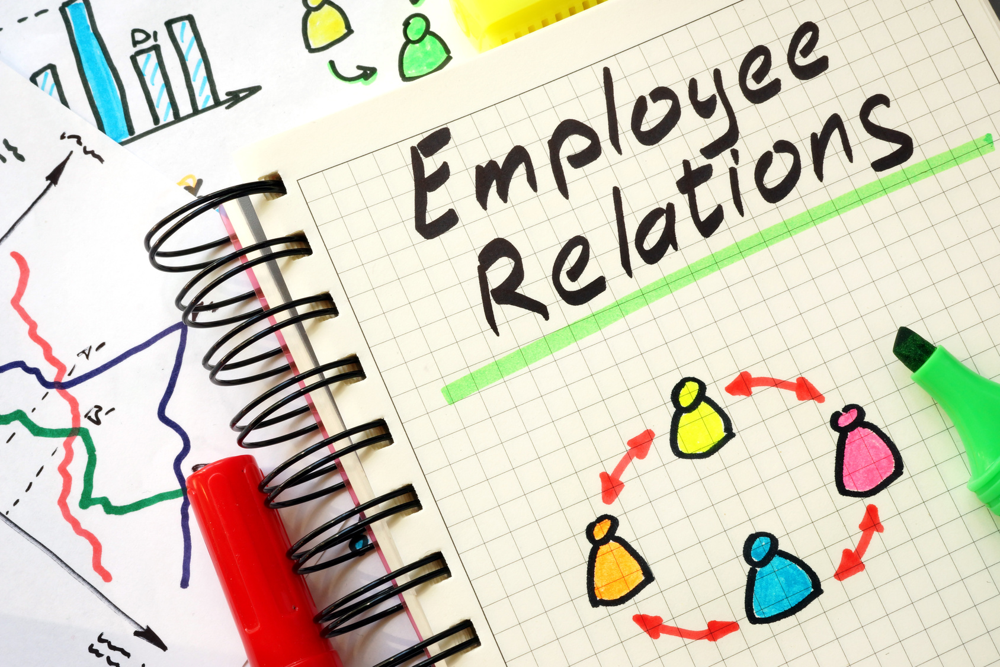

Industry expects more than recruitment from HR. HR should act like a doctor in the organization. HR need to maintain organization healthy. Employee Relation is a vital role of HR. Our Expert will teach you the different aspects of Employee Relations. Followings are falling under Employee Relations. Ethics Justices Fair Treatment Culture Two Way Communication Employee Discipline Employee Privacy Dismissals Personal Supervisory Liability Exit Interview Employee Safety OSHA Employee Health Work Place Violence Responsibilities of Employees Rights of Employees Employee Resistance
